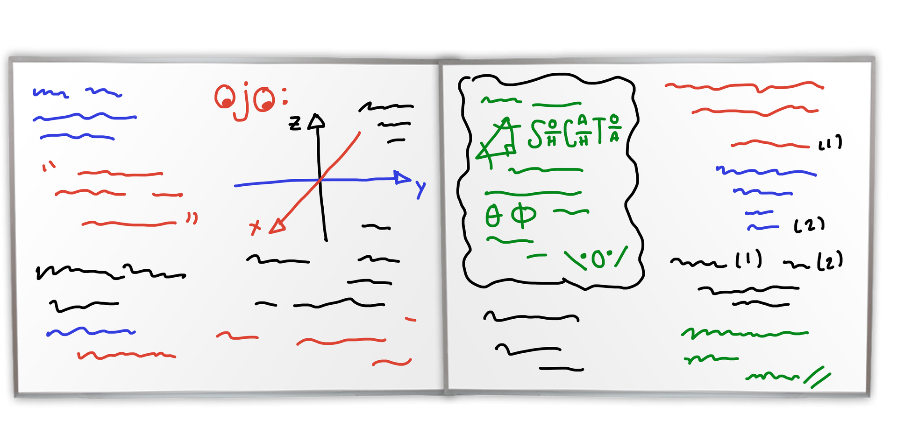

Este proyecto nació de la necesidad de comprender un tema que al inicio parecía imposible.
No solo buscábamos apoyarnos a nosotros mismos, sino también ayudar a nuestros compañeros y
a todas las personas que puedan necesitarlo en el futuro.
Por esta razón,
decidimos crear este proyecto: para compartir lo aprendido, facilitar el entendimiento y
demostrar que, con esfuerzo y dedicación, cualquier tema puede llegar a comprenderse.